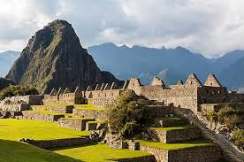
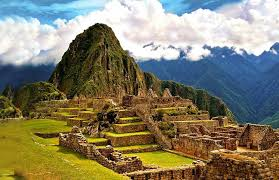
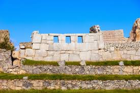
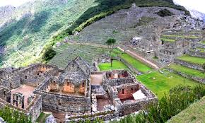
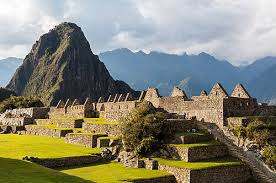
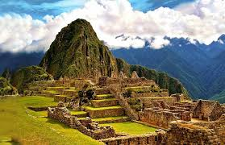
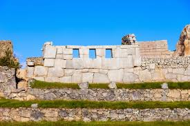
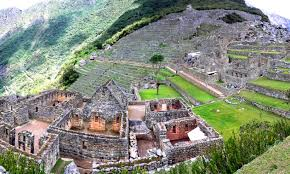

Machu Picchu, a majestic testament to Incan ingenuity, rests high in the Peruvian Andes, perched on a mountain ridge above the Urubamba River Valley. Believed to have been built in the 15th century during the reign of Emperor Pachacuti, this ancient citadel served as a royal estate, religious site, or ceremonial center—its true purpose still shrouded in mystery. Surrounded by steep cliffs and lush greenery, Machu Picchu showcases the Inca’s architectural mastery, with precisely cut stones, terraced slopes, and intricate drainage systems. Abandoned in the 16th century and hidden from the outside world until its rediscovery in 1911, it has since become a symbol of Peru’s rich heritage. As a UNESCO World Heritage site and one of the New Seven Wonders of the World, Machu Picchu captivates millions each year with its breathtaking views and profound historical significance.
➤ History
Machu Picchu, one of the most iconic remnants of the Inca civilization, was built in the mid-15th century during the reign of Emperor Pachacuti. Situated over 2,400 meters above sea level in the Andes Mountains of Peru, the site was constructed using sophisticated dry-stone techniques, with massive stone blocks precisely fitted together without mortar. Though its exact purpose remains debated, scholars believe it may have served as a royal estate, religious retreat, or ceremonial center. Isolated from Spanish conquest and abandoned in the 16th century, Machu Picchu remained largely unknown to the outside world until its rediscovery by Hiram Bingham in 1911. The city’s layout, with its terraced hillsides, temples, and astronomical alignments, reflects the Inca’s deep understanding of nature, engineering, and astronomy. While centuries of vegetation had hidden much of the site, preservation efforts have since restored much of its former grandeur. Today, Machu Picchu is recognized as a UNESCO World Heritage site and one of the New Seven Wonders of the World, attracting visitors from around the globe who are drawn to its mystery, beauty, and cultural significance
➤ Geography
The one thing many people assume about Machu Picchu is that it was a hidden “lost city” known only to a select few until modern times—but in fact, local Indigenous communities were always aware of its existence. While American explorer Hiram Bingham is credited with bringing Machu Picchu to international attention in 1911, the site had long been part of regional knowledge and lore. Perched high in the Andes, Machu Picchu was never discovered by Spanish conquistadors, which helped preserve its intricate stonework and terraces for centuries. Built in the mid-15th century by the Inca Empire, it showcases masterful engineering without the use of mortar, aligning with the natural contours of the mountain. Despite its remote location, the site had access to water, agricultural terraces, and religious centers, demonstrating the Inca’s deep connection with the land. Today, though still surrounded by mystery, Machu Picchu continues to awe visitors not only for its beauty, but for the sophistication and resilience of the civilization that created it.
➤ Architecture
Machu Picchu is renowned for its masterful design and integration with the surrounding landscape, showcasing the architectural and engineering brilliance of the Inca civilization. Constructed from finely cut granite stones fitted without mortar, the site includes temples, residences, agricultural terraces, ceremonial platforms, and water channels—all carefully adapted to the steep mountain terrain. The city is divided into urban and agricultural sectors, with structures aligned to celestial events and natural features, reflecting the Incas’ advanced understanding of astronomy and the environment. Key buildings like the Temple of the Sun and the Room of the Three Windows demonstrate refined stonework and sacred significance, while the Intihuatana stone, believed to be an astronomical tool, shows the spiritual connection between architecture and cosmology. Sophisticated drainage systems prevent erosion and manage rainfall, and the terracing not only supported agriculture but also stabilized the steep slopes. Pathways and stairways connect different levels of the city, allowing for efficient movement despite the challenging terrain. The entire site blends harmoniously with its natural surroundings, with structures oriented to align with solstices, mountain peaks, and river valleys. Machu Picchu’s enduring beauty lies not just in its scenic setting, but in the ingenuity and intention behind every stone, path, and plaza—making it one of the most awe-inspiring architectural achievements of the ancient world
➤ Tourism
Tourism at Machu Picchu plays a crucial role in sharing the legacy of the Inca Empire with the world. Nestled high in the Peruvian Andes, this UNESCO World Heritage Site draws over a million visitors each year, who come to experience its breathtaking scenery and explore its meticulously crafted stone structures. The most common access point is through the town of Aguas Calientes, with buses and hiking trails—such as the famous Inca Trail—leading up to the citadel. Guided tours offer insight into the site's historical, cultural, and spiritual significance, highlighting landmarks like the Temple of the Sun, the Sacred Plaza, and the Intihuatana stone. To manage the large number of tourists and preserve the site’s integrity, strict regulations and timed entry tickets have been implemented. While the main complex is the centerpiece, surrounding trails like Huayna Picchu and Machu Picchu Mountain provide panoramic views and opportunities for more strenuous hikes. Ecotourism initiatives and local communities play an active role in promoting sustainable travel and cultural respect. Machu Picchu not only contributes significantly to Peru’s tourism economy but also serves as a global symbol of indigenous achievement, drawing visitors who seek both adventure and a deeper connection to the past.
 






